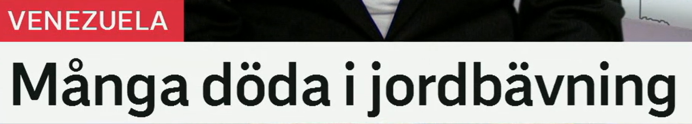
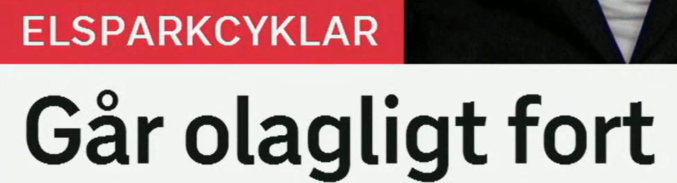

Många döda i jordbävning
地震造成多人死亡。直译：“地震中有许多死者。”
1. en jordbävning · 地震
- ett jordskalv / ett skalv：地震、震动，新闻中常作近义词
- ett efterskalv：余震
- jordbävningens epicentrum：震中
- en naturkatastrof：自然灾害，上位词
2. död · 词性一起记
- död：死亡的；也可指死者
- dö：死亡，dör – dog – dött
- ett dödsfall：一例死亡事件，较正式
- omkomma：遇难，新闻报道常用
Flera personer omkom i jordbävningen. 数人在地震中遇难。
Området drabbades av ett kraftigt skalv. 该地区遭遇强烈地震。
Räddningsarbetet fortsätter efter katastrofen. 灾后的救援工作仍在继续。

Går olagligt fort
（电动滑板车）速度快到违法 / 以超过法规允许的速度行驶。
1. gå fort · 运行得快
- gå fort：走得快、运行得快、进展快
- köra fort：开得快，强调驾驶者
- hålla hög hastighet：保持高速，较正式
- rusa fram：飞驰，语气更形象
2. olaglig · 非法的
- olaglig – olagligt – olagliga：形容词变化
- laglig：合法的；lagligt：合法地
- bryta mot lagen：违法，直译“违反法律”
- otillåten：不被允许的，不一定等同犯罪
Vissa elsparkcyklar går snabbare än tillåtet. 某些电动滑板车比允许的速度更快。
Föraren överskred hastighetsgränsen. 驾驶者超过了限速。
Polisen kontrollerar olaglig fortkörning. 警方检查违法超速行为。
Vill ha plan för extrem värme
（环境党）希望制定应对极端高温的计划。
1. en plan för · 针对……的计划
- ha en plan för något：有应对某事的计划
- utarbeta en plan：制定计划，正式用法
- en handlingsplan：行动方案
- en beredskapsplan：应急预案
2. extrem värme · 极端高温
- en värmebölja：热浪
- höga temperaturer：高温
- rekordvärme：创纪录的高温
- värmestress：热应激、热压力
Partiet vill att regeringen tar fram en handlingsplan. 该党希望政府制定行动方案。
Kommunerna behöver beredskap för värmeböljor. 各市镇需要为热浪做好应急准备。
Äldre är särskilt utsatta vid extrem värme. 极端高温下，老年人尤其脆弱。
今日词汇延伸表
复习时先遮住后两列，尝试自己说出至少一个近义词和一个固定搭配。
| 核心词 | 近义词 / 相关词 | 高频搭配 |
|---|---|---|
| jordbävning | jordskalv, skalv, naturkatastrof | drabbas av en jordbävning, ett kraftigt skalv |
| död / dö | omkomma, dödsfall, avliden | dö i en olycka, flera döda, antalet dödsfall |
| olagligt fort | för snabbt, över hastighetsgränsen | köra fort, överskrida gränsen, bryta mot lagen |
| plan för | handlingsplan, strategi, beredskap | utarbeta en plan, ta fram en plan för |
| extrem värme | värmebölja, rekordvärme, höga temperaturer | drabbas av värmebölja, skydd mot värmen |
练习 1
用 drabbas av 翻译：“该地区遭遇了一场地震。”
练习 2
解释 Elsparkcykeln går fort 与 Föraren kör fort 的主语差别。
练习 3
把 vill ha en plan 改写为更正式的 vill utarbeta en plan。
练习 4
用 värmebölja 写一句包含 beredskap för 的句子。